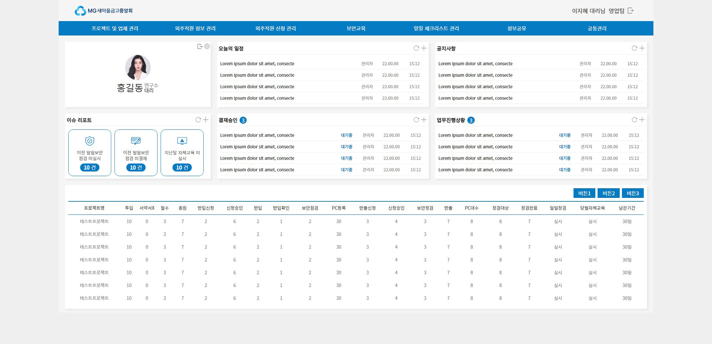

새마을금고 외주직원관리 리뉴얼구축
OVERVIEW
"MG새마을금고"의 외주직원 관리를 위한 포탈 사이트를 만들었습니다. 이번 프로젝트에서는 고객의 요청에 따라 업무를 한눈에 파악할 수 있도록 한눈에 업무별로 구분되도록 디자인했습니다. 포탈 사이트는 포틀릿 구조로 디자인하여 각 업무별로 카운트된 이슈리포트 등을 한눈에 보여줍니다. 이를 통해 외주 관리해야 하는 인력들이 아직 처리하지 않은 업무를 쉽게 파악할 수 있습니다. 또한, "MG새마을금고"의 메인 컬러를 활용하여 포탈 사이트에 이용자의 친숙함을 더하였습니다. 이를 통해 사용자들이 포탈 사이트를 사용하는 동안 더욱 편안하고 익숙한 느낌을 받을 수 있도록 하였습니다. 이러한 디자인은 사용자들의 편의성과 직관성을 고려하여 구성되었습니다. 외주 관리 및 업무 처리를 보다 효율적으로 수행할 수 있도록 디자인하였습니다.
- TYPE.
- Web Design
- CLIENT.
- 새마을금고 외주직원관리시스템
- Individual work.
- 2019.10 (1 Month)
- URL.
- 메인페이지
- 공백
- 로그인 서브1 서브2
- 작업내역
-
포토샵
XD
일러스트
HTML,CSS
업무의 효율을 높여줄 한눈에 들어오는 편리함
